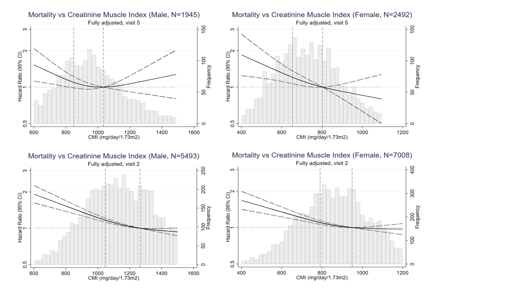

Association of Muscle Mass and Frailty/ Mortality
Why are we interested in this topic?
Low muscle mass is related to a higher risk of frailty and increased mortality in older adults. However, muscle mass is not easily assessed in routine clinical medicine practice. In this study, we proposed to develop a serum biomarker based creatinine muscle index (CMI) using serum creatinine and estimated GFR. This way we can easily calculate muscle mass in clincal practice and take precaution actions to reduce frailty risk.
What's the formula of calculating Muscle Mass from serum creatinie?
CMI = eGFRcys [ml/min/1.73m2] * serum creatinine [mg/dl] * 1 dl/100 ml * 1440 min/1 day
What statistical analyses did we do to validate this formula?
We used multinomial logistic regression examined associations of sex-specific CMI tertiles with frailty categorized as robust, prefrail, and frail. In longitudinal analyses from either visit 5 or visit 2, Cox proportional hazard regression analyses were used for associations of sex-specific tertiles of CMI and all-cause mortality. We also implemented Cox regression with CMI and all-cause mortality with CMI modeled using a cubic spline.
What conclusions did we draw from this study?

We conclude that CMI was robustly associated with frailty (tertile 1 vs 3): OR 4.63 (95%CI 2.12-10.11) in men and 2.26 (95%CI 1.34-3.81) in women. CMI was also associated with mortality (tertile 1 vs 3): HR1.45 (95%CI 1.07-1.97) in men and HR 1.67 (95%CI 1.20-2.31) in women.